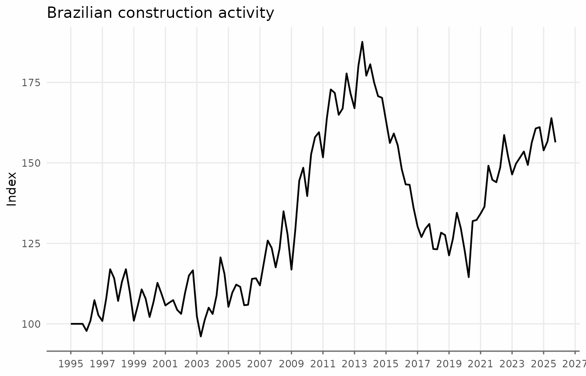
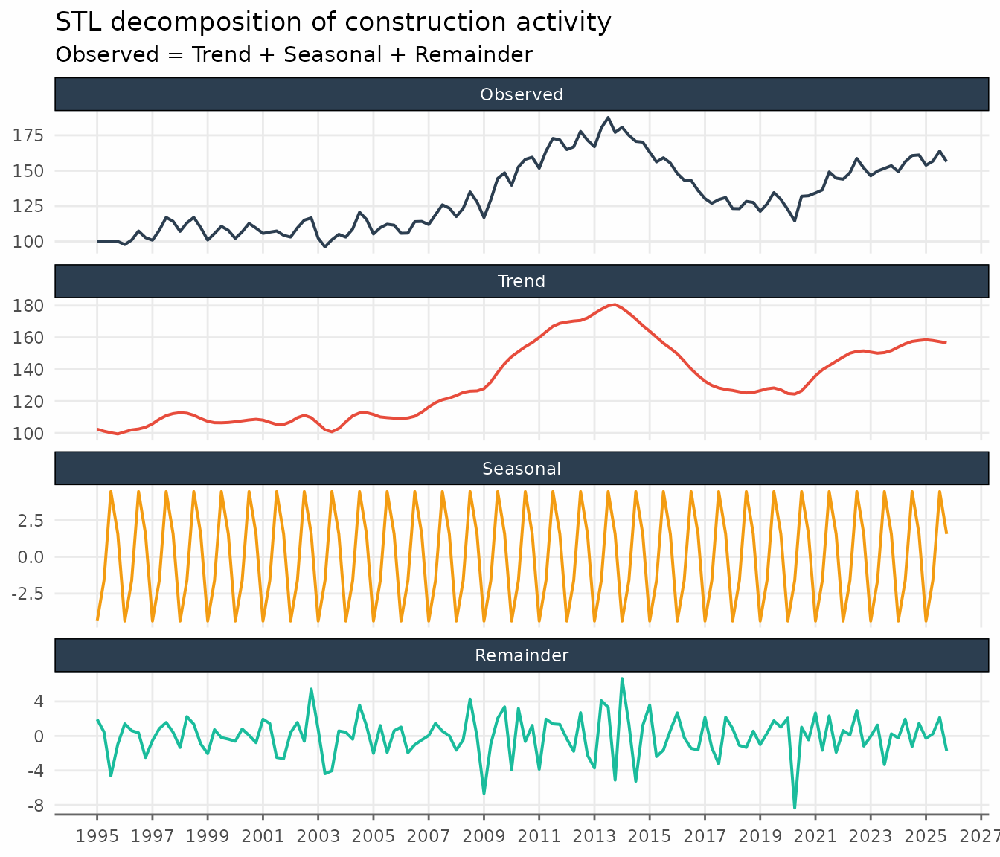
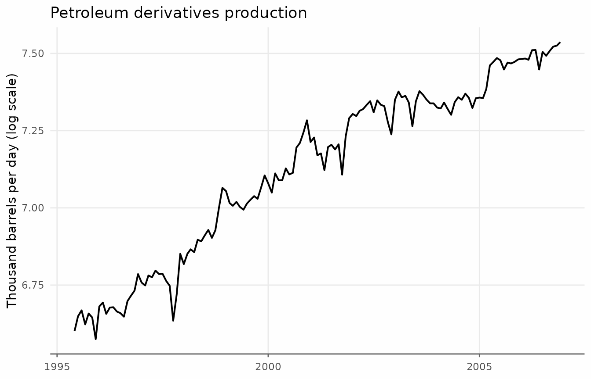
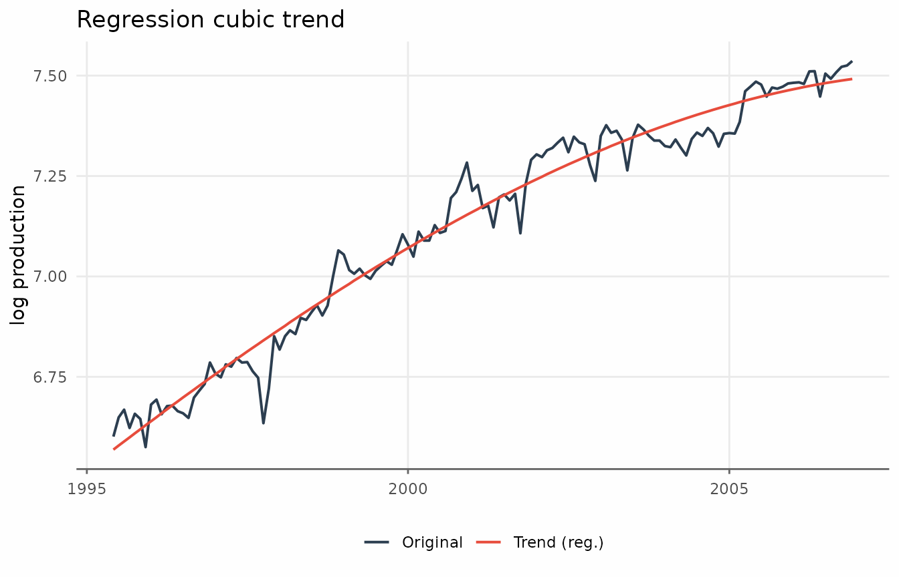
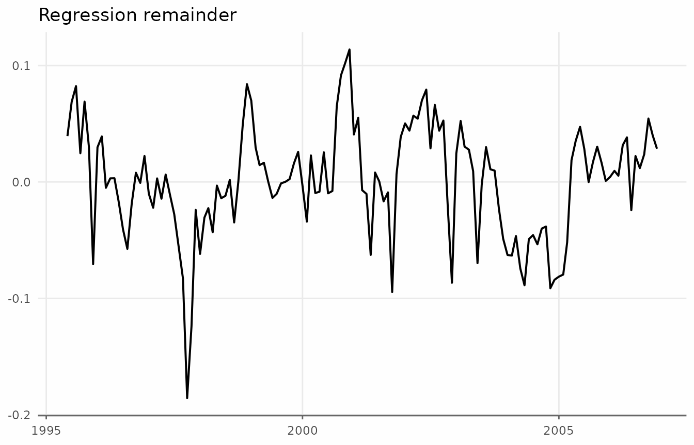
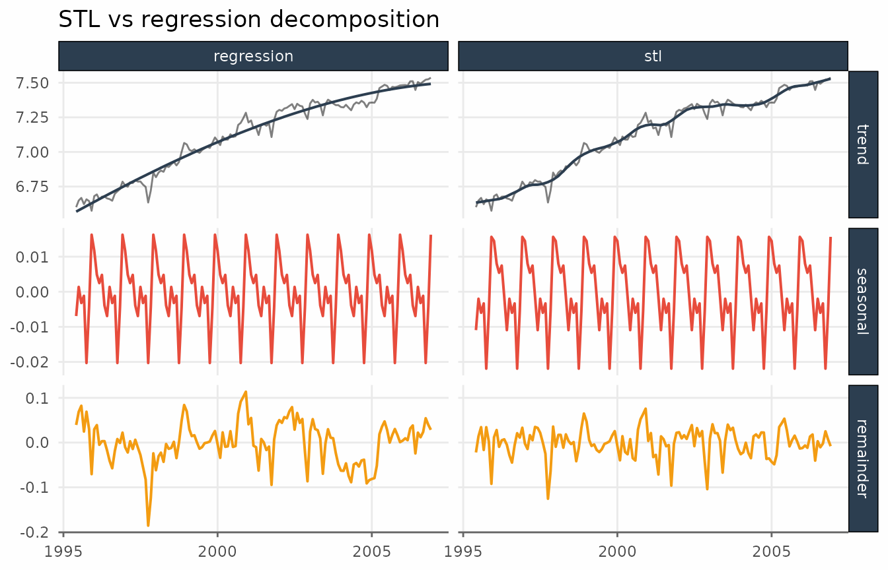
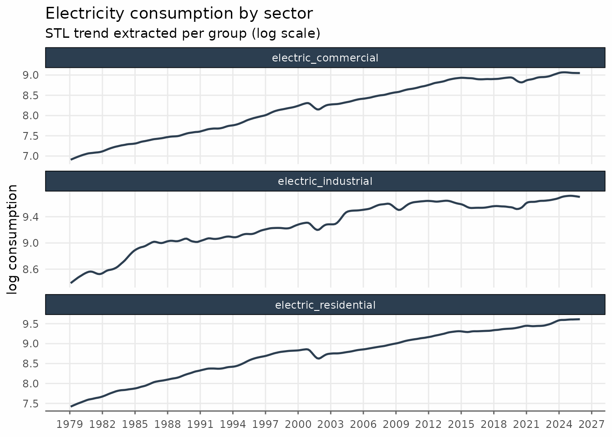
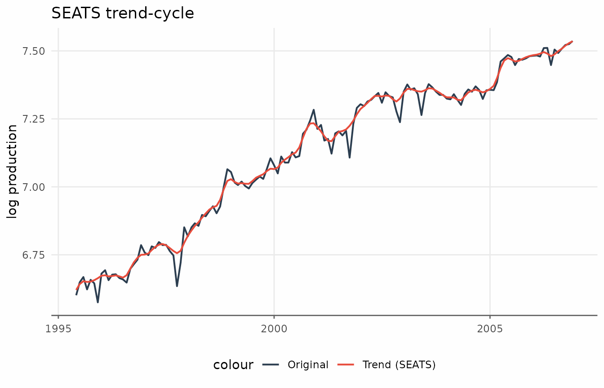
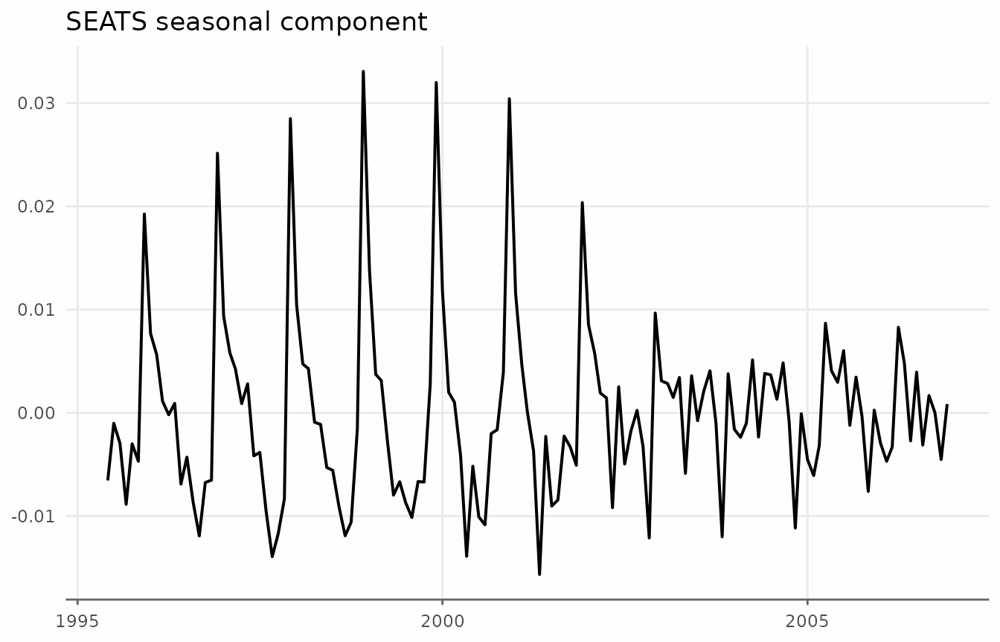
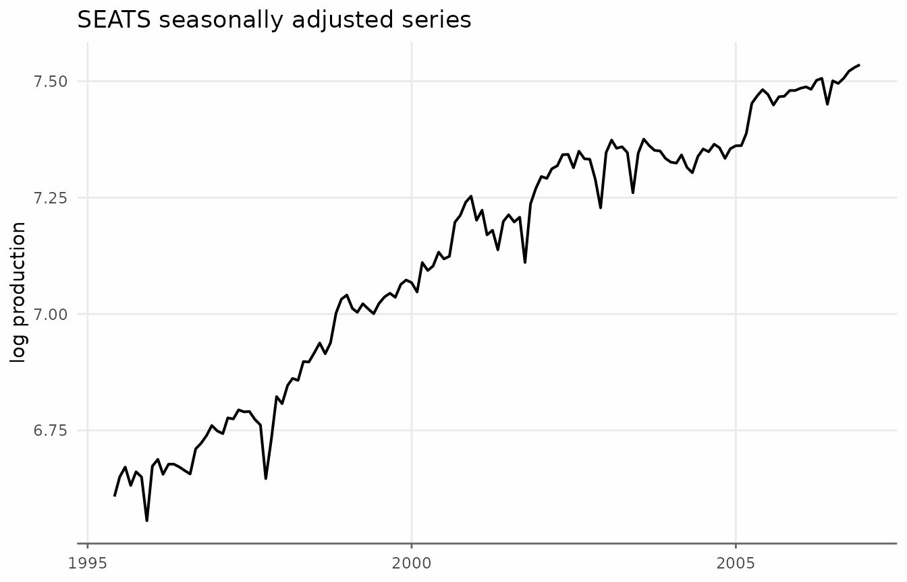

Decomposing Series
The trend extraction methods covered in the other vignettes return a
single smooth component. Often, though, an economic series is more
naturally described as the sum of three parts: a slow-moving
trend, a repeating seasonal pattern,
and an irregular remainder.
decompose_series() splits a series into these three
components and adds them as columns to the original data frame.
The theme below is used throughout the vignette for consistent styling.
library(ggplot2)
theme_series <- theme_minimal(paper = "#fefefe") +
theme(
legend.position = "bottom",
panel.grid.minor = element_blank(),
strip.background = element_rect(fill = "#2c3e50"),
strip.text = element_text(color = "#fefefe"),
axis.ticks.x = element_line(color = "gray40", linewidth = 0.5),
axis.line.x = element_line(color = "gray40", linewidth = 0.5),
axis.title.x = element_blank(),
palette.colour.discrete = c(
"#2c3e50",
"#e74c3c",
"#f39c12",
"#1abc9c",
"#9b59b6"
)
)Trend extraction vs decomposition
It is worth being clear about the difference between this function
and augment_trends().
-
augment_trends()returns only the trend (trend_*columns). The seasonal and irregular movements are simply smoothed away. -
decompose_series()returns all three components (trend_*,seasonal_*, andremainder_*), and they add back up exactly to the original series.
Because there is a seasonal component,
decompose_series() requires seasonal data: monthly
(frequency = 12) or quarterly (frequency = 4).
For annual series there is nothing seasonal to isolate, so use
augment_trends() instead.
A first decomposition
Let’s start with the gdp_construction dataset, a
quarterly index of Brazilian construction activity that ships with
trendseries.
ggplot(gdp_construction, aes(date, index)) +
geom_line(lwd = 0.7) +
scale_x_date(date_breaks = "2 years", date_labels = "%Y") +
labs(
title = "Brazilian construction activity",
y = "Index"
) +
theme_series
Passing the data frame to decompose_series() adds three
new columns. The frequency is detected automatically from the date
column.
gdp_parts <- gdp_construction |>
decompose_series(value_col = "index")
gdp_parts
#> # A tibble: 124 × 5
#> date index trend_stl seasonal_stl remainder_stl
#> <date> <dbl> <dbl> <dbl> <dbl>
#> 1 1995-01-01 100 102. -4.37 1.93
#> 2 1995-04-01 100 101. -1.62 0.476
#> 3 1995-07-01 100 100. 4.44 -4.62
#> 4 1995-10-01 100 99.4 1.55 -0.946
#> 5 1996-01-01 97.8 101. -4.37 1.42
#> 6 1996-04-01 101. 102. -1.62 0.613
#> 7 1996-07-01 107. 103. 4.44 0.370
#> 8 1996-10-01 103. 104. 1.55 -2.49
#> 9 1997-01-01 101. 106. -4.37 -0.530
#> 10 1997-04-01 108. 109. -1.62 0.849
#> # ℹ 114 more rowsThe three components are named after the method (stl by
default): trend_stl, seasonal_stl, and
remainder_stl.
Reshaping to long format makes it easy to plot the original series alongside its three components.
gdp_long <- gdp_parts |>
pivot_longer(
cols = c(index, trend_stl, seasonal_stl, remainder_stl),
names_to = "component",
values_to = "value"
) |>
mutate(
component = factor(
component,
levels = c("index", "trend_stl", "seasonal_stl", "remainder_stl"),
labels = c("Observed", "Trend", "Seasonal", "Remainder")
)
)
ggplot(gdp_long, aes(date, value)) +
geom_line(aes(color = component), lwd = 0.7, show.legend = FALSE) +
facet_wrap(vars(component), ncol = 1, scales = "free_y") +
scale_x_date(date_breaks = "2 years", date_labels = "%Y") +
labs(
title = "STL decomposition of construction activity",
subtitle = "Observed = Trend + Seasonal + Remainder",
y = NULL
) +
theme_series
STL decomposition
The default method is STL (Seasonal-Trend
decomposition via Loess), implemented with stats::stl().
The seasonal component is estimated with a loess smoother, the trend
with an adaptive moving average, and the remainder is whatever is left
over. The defaults (s.window = "periodic",
robust = FALSE) suit most economic series with a stable
seasonal pattern.
Fine control is available through the params list. The
two most useful options are an evolving seasonal pattern and robust
fitting.
# Allow the seasonal pattern to evolve slowly over time, and downweight outliers
gdp_robust <- gdp_construction |>
decompose_series(
value_col = "index",
params = list(s.window = 13, robust = TRUE)
)A s.window of "periodic" forces an
identical seasonal shape in every year; supplying a positive odd integer
instead lets that shape drift gradually. Setting
robust = TRUE reduces the influence of one-off spikes on
the trend and seasonal estimates.
Regression decomposition
The regression method
(methods = "regression") fits a single OLS model
where is a polynomial in time and is a set of period (month or quarter) dummy variables. The trend is the constant plus the polynomial terms, the seasonal component is the period effect (centred to mean zero), and the remainder is the model residual.
Unlike STL, the regression trend is a smooth global polynomial, which
can be a better description of a series with a steady long-run
direction. For the examples that follow we use the
oil_derivatives dataset, which records monthly
petroleum-derivatives production in Brazil; we restrict it to the
1995–2006 window and work on the log scale.
suboil <- oil_derivatives |>
filter(between(date, as.Date("1995-06-01"), as.Date("2006-12-01"))) |>
mutate(lprod = log(production))
ggplot(suboil, aes(date, lprod)) +
geom_line(lwd = 0.7) +
labs(
title = "Petroleum derivatives production",
y = "Thousand barrels per day (log scale)"
) +
theme_series
The trend argument selects the polynomial form:
"linear" (the default), "quadratic" for
accelerating or decelerating growth, or "cubic". Orthogonal
polynomials are used by default for numerical stability.
suboil_reg <- suboil |>
decompose_series(
value_col = "lprod",
methods = "regression",
trend = "cubic"
)
ggplot(suboil_reg, aes(date)) +
geom_line(aes(y = lprod, color = "Original"), lwd = 0.7) +
geom_line(aes(y = trend_regression, color = "Trend (reg.)"), lwd = 0.7) +
labs(title = "Regression cubic trend", y = "log production", color = NULL) +
theme_series
If the series is trend-stationary, remainder_regression
— the series with the trend and seasonality removed — is approximately
stationary.
ggplot(suboil_reg, aes(date, remainder_regression)) +
geom_line(lwd = 0.7) +
labs(title = "Regression remainder", y = NULL) +
theme_series
It is instructive to compare the two decomposition methods directly. Both produce fixed seasonal patterns, but STL follows short-term fluctuations more closely, producing a “cleaner” remainder.
comparison <- suboil |>
decompose_series(value_col = "lprod", methods = "stl") |>
decompose_series(value_col = "lprod", methods = "regression", trend = "cubic")
comparison_long <- comparison |>
pivot_longer(
cols = trend_stl:remainder_regression,
names_pattern = "(.*)_(.*)",
names_to = c("component", "method"),
values_to = "trend"
) |>
mutate(
component = factor(component, levels = c("trend", "seasonal", "remainder"))
)
ggplot(comparison_long, aes(date, trend)) +
# Original series
geom_line(
data = suboil,
aes(y = lprod),
layout = c(1, 2),
lwd = 0.5,
alpha = 0.5
) +
# Components and methods
geom_line(aes(y = trend, color = component), lwd = 0.7) +
facet_grid(vars(component), vars(method), scales = "free_y") +
guides(color = "none") +
labs(title = "STL vs regression decomposition", y = NULL) +
theme_series
Grouped decomposition
Like augment_trends(), decompose_series()
accepts a group_cols argument to decompose several series
at once. The data must be in tidy long format. Here we use the
electricity dataset, which records monthly electricity
consumption for three sectors.
electricity_parts <- electricity |>
mutate(lvalue = log(value)) |>
decompose_series(value_col = "lvalue", group_cols = "name_series")
glimpse(electricity_parts)
#> Rows: 1,689
#> Columns: 7
#> $ date <date> 1979-02-01, 1979-03-01, 1979-04-01, 1979-05-01, 1979-06…
#> $ name_series <chr> "electric_commercial", "electric_commercial", "electric_…
#> $ value <dbl> 1030, 1057, 1044, 1038, 1002, 979, 985, 1047, 1067, 1113…
#> $ lvalue <dbl> 6.937314, 6.963190, 6.950815, 6.945051, 6.909753, 6.8865…
#> $ trend_stl <dbl> 6.908726, 6.918239, 6.927753, 6.937020, 6.946288, 6.9554…
#> $ seasonal_stl <dbl> 0.04401996, 0.04635439, 0.04502582, -0.01022254, -0.0527…
#> $ remainder_stl <dbl> -0.015431723, -0.001403624, -0.021963659, 0.018253335, 0…Each group is decomposed independently, and the components are stacked back into a single data frame.
ggplot(electricity_parts, aes(date)) +
geom_line(aes(y = trend_stl), color = "#2c3e50", lwd = 0.8) +
facet_wrap(vars(name_series), ncol = 1, scales = "free_y") +
scale_x_date(date_breaks = "3 years", date_labels = "%Y") +
labs(
title = "Electricity consumption by sector",
subtitle = "STL trend extracted per group (log scale)",
y = "log consumption"
) +
theme_series
Multiplicative seasonality
So far we have handled multiplicative seasonality by logging the
series by hand before decomposing
(lprod = log(production),
lvalue = log(value)). Many macroeconomic series behave this
way: the seasonal swings grow with the level of the series, so an
additive decomposition of the raw data would leave a seasonal pattern
that widens over time.
Every decompose_series() method is additive by
construction. Instead of logging manually, you can pass
transform = "log", which logs the series, decomposes it
additively, and exponentiates the components back to the original
scale.
decompose_series(
oil_derivatives,
value_col = "production",
transform = "log"
)On the log scale the additive identity holds; after exponentiating,
the components satisfy the multiplicative identity
trend * seasonal * remainder = value. This requires
strictly positive data.
Other methods
Classical decomposition
methods = "classic" is the textbook decomposition
implemented by stats::decompose(). The trend is a centred
moving average of order equal to the frequency, the seasonal component
is the average detrended value for each period, and the remainder is
what is left. It is simple and fast, but the moving-average trend is
undefined at the boundaries, so the first and last
frequency / 2 values of trend_classic (and
hence remainder_classic) are NA.
decompose_series(
oil_derivatives,
value_col = "production",
methods = "classic",
transform = "log"
)Basic structural model
methods = "bsm" fits a Basic Structural (state-space)
Model with stats::StructTS(): stochastic level, slope, and
seasonal components estimated by maximum likelihood and extracted with
the Kalman smoother. Unlike the moving-average methods, it returns trend
and seasonal estimates for every observation — including the
endpoints — and lets both components evolve over time. The trade-off is
that it relies on numerical optimisation, which can occasionally fail to
converge on short or irregular series.
decompose_series(
suboil,
value_col = "lprod",
methods = "bsm"
)X-13ARIMA-SEATS (seasonal)
methods = "seats" runs the U.S. Census Bureau’s
X-13ARIMA-SEATS program through the
seasonal package — the seasonal-adjustment
procedure used by many statistical agencies. seas() is
called with its automatic defaults: ARIMA model selection, log/level
transformation, outlier detection, and calendar adjustment. The SEATS
trend-cycle and seasonally adjusted series are then mapped to a
trend/seasonal/remainder triple that reproduces the original series
exactly. Because X-13 selects its own transformation internally, there
is normally no need to set transform = "log" for this
method.
seasonal is an optional (Suggested) dependency, required
only for "seats"; the chunks below are skipped if it is not
installed.
seas_oil <- decompose_series(
suboil,
value_col = "lprod",
methods = "seats"
)
ggplot(seas_oil, aes(date)) +
geom_line(aes(y = lprod, color = "Original"), lwd = 0.7) +
geom_line(aes(y = trend_seats, color = "Trend (SEATS)"), lwd = 0.7) +
labs(title = "SEATS trend-cycle", y = "log production") +
theme_series
ggplot(seas_oil, aes(date, seasonal_seats)) +
geom_line(lwd = 0.7) +
labs(title = "SEATS seasonal component", y = NULL) +
theme_series
Often our interest is mainly in the series without its
seasonal component. For convenience, deseason_series()
wraps decompose_series() and returns the seasonally
adjusted series directly.
deseas_oil <- deseason_series(
suboil,
value_col = "lprod",
methods = "seats",
# set to TRUE to also return the trend, seasonal, and remainder components
components = FALSE
)
ggplot(deseas_oil, aes(date, seasadj_seats)) +
geom_line(lwd = 0.7) +
labs(
title = "SEATS seasonally adjusted series",
y = "log production"
) +
theme_series
This is equivalent to using seasadj = TRUE in
decompose_series().
decompose_series(
suboil,
value_col = "lprod",
methods = "seats",
seasadj = TRUE
)Summary
-
decompose_series()splits a seasonal (monthly or quarterly) series into trend, seasonal, and remainder components that sum to the original series. - There are five available methods:
"stl"(default),"regression","classic","bsm", and"seats". Pass a vector to compare several at once. - All methods are additive; use
transform = "log"for multiplicative seasonality, where the components instead multiply to the original series. -
deseason_series()is a convenience wrapper that returns only the seasonally adjusted series.